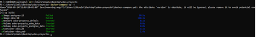
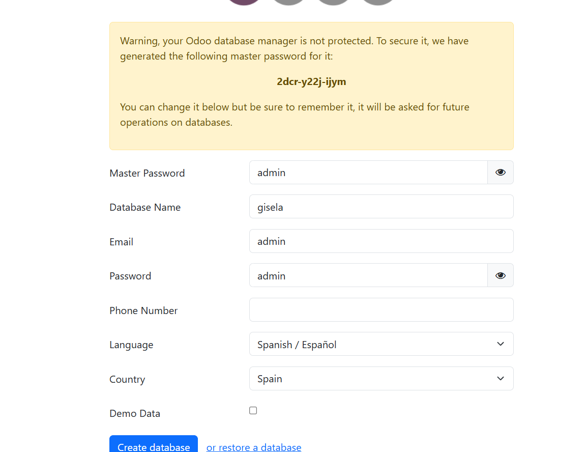
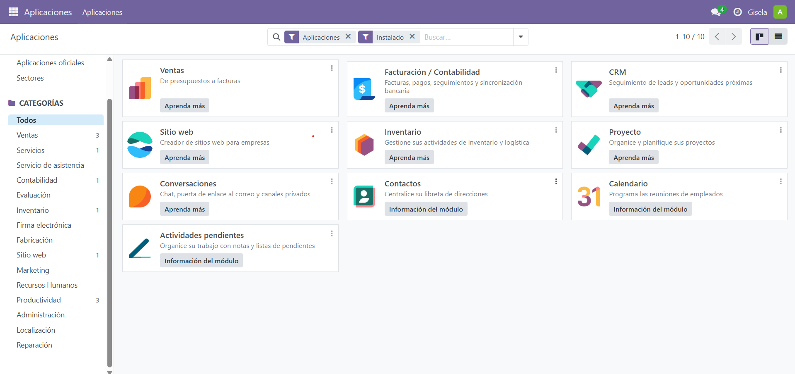
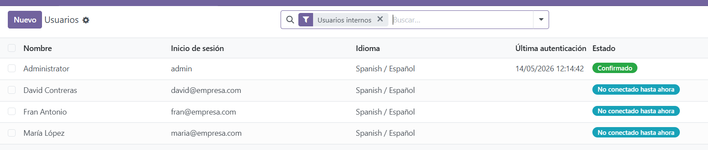

Sistemas de Gestión Empresarial
Bienvenido a la página principal del proyecto. Navega por el menú para descubrir todo sobre los Sistemas de Gestión Empresarial (ERP) y la implementación práctica del sistema Odoo.
¿Qué es un SGE? Tipos y características
Un Sistema de Gestión Empresarial (ERP) es un software que integra y centraliza todos los procesos operativos y de negocio de una empresa, facilitando el flujo de información.
Tipos de SGE:
- Propietarios: Requieren el pago de licencias (ej. SAP, Microsoft Dynamics).
- Open Source / Libres: Código abierto y generalmente gratuitos (ej. Odoo, ERPNext).
Características principales:
- Modularidad: Se instalan solo los módulos necesarios (Ventas, RRHH, Inventario).
- Base de datos centralizada: Una única fuente de datos para evitar duplicidades.
- Automatización: Agiliza tareas repetitivas y mejora la eficiencia.
Instalación de Odoo en local
Para este proyecto hemos elegido Odoo, un SGE gratuito y de código abierto. A continuación, se detalla el proceso de instalación:
- Descargar la versión Community desde la página oficial de Odoo para nuestro sistema operativo.
- Ejecutar el instalador. Durante el proceso, se instalará también el servidor de base de datos PostgreSQL.
- Configurar las credenciales de conexión de PostgreSQL.
- Finalizar la instalación y acceder a localhost:8069 desde el navegador.
- Crear la base de datos inicial introduciendo el nombre de la empresa, correo y contraseña.

Administración y Configuración
La administración del SGE se realiza desde el módulo de "Ajustes". Para empezar a trabajar, es necesario configurar los datos básicos y los módulos:
- Configuración de la empresa: Se establecen los datos fiscales, el logotipo y la moneda predeterminada.
- Gestión de aplicaciones: Desde el menú de Aplicaciones, instalamos los módulos necesarios como CRM, Ventas, Facturación y Punto de Venta (TPV).
- Ajustes generales: Configuración de permisos de correo, plantillas de documentos y formato de fechas.

Acceso Seguro, Roles y Privilegios
El control de acceso es fundamental para proteger la información en un SGE. Odoo maneja la seguridad basándose en grupos de usuarios con diferentes privilegios:
- Administrador: Tiene acceso total a la configuración del sistema y a todos los módulos.
- Usuario Interno: Empleados de la empresa. Su acceso se restringe módulo por módulo (ej. un comercial solo ve Ventas, no Recursos Humanos).
- Portal / Público: Acceso para clientes externos que solo pueden ver sus propios presupuestos y facturas.
Para cambiar un rol, el administrador debe ir a Ajustes > Usuarios y Empresas > Usuarios, seleccionar un usuario y marcar las casillas correspondientes a su nivel de acceso.

Elaboración de informes y Exportación
La extracción de datos es clave para la toma de decisiones. Odoo ofrece varias formas de manejar la información:
Elaboración de informes
- Informes dinámicos: Se generan directamente desde las vistas de los módulos (gráficos de barras, líneas o circulares).
- Informes PDF: En cualquier registro (como una factura o presupuesto), se puede pulsar el botón "Imprimir" para generar un documento PDF con formato oficial.
Exportación de información
Para sacar datos del sistema hacia otras herramientas (como Excel):
- Ir a la vista de lista del módulo deseado (ej. Clientes o Productos).
- Seleccionar los registros marcando las casillas de la izquierda.
- Hacer clic en el botón "Acción" y seleccionar "Exportar".
- Elegir los campos específicos que se desean descargar y el formato (XLSX o CSV).
